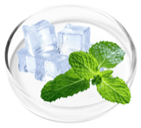
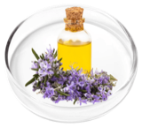
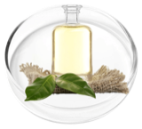
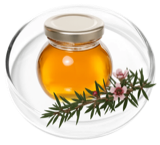
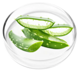
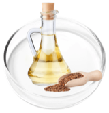
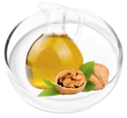
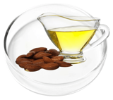

KeraFirm Pro Review 2026: Why It's Our Top-Rated Brush-On Nail Formula
We dug into the ingredient list, the research behind it, the daily routine, the price and the refund terms. KeraFirm Pro came out on top: a smart, research-backed blend in an applicator that makes nail care genuinely easy.

What Is KeraFirm Pro?
KeraFirm Pro is a topical nail and skin formula that comes in a 1 oz (30 ml) amber bottle with a brush applicator built into the cap. It's sold as a "nail health formula" for people dealing with stubborn, discolored toenails, and the label lists three goals: supports strong nails, clean appearance, and calming and soothing.
What sets it apart from the creams, pills and foot soaks we usually see is the delivery. Instead of swallowing a capsule or soaking your feet, you paint the formula directly onto the nail and work it into the cuticle, the area the maker says most products miss.

How Does KeraFirm Pro Work?
According to the maker, most nail problems start with hidden fungal buildup beneath the nail, where surface treatments struggle to reach. KeraFirm Pro is designed to address that in two ways:
- Targeted delivery. The precision brush coats the full nail evenly, and a cotton swab pushes the formula into the cuticle and nail folds.
- A layered blend. Essential oils that have been studied for antifungal activity (tea tree, clove, lavender, camphor, manuka) sit alongside undecylenic acid, plus nourishing oils and vitamin E for the nail and surrounding skin.
The idea is to keep the area under steady care while healthy nail grows out. That's an important expectation to set: a toenail takes many months to grow out fully, so any visible change happens gradually.
KeraFirm Pro Ingredients and What the Research Says
This is where KeraFirm Pro really stands out. Its 13 ingredients cover every angle: research-backed actives for the nail, plus soothing and nourishing oils for the skin around it. Here's what each one does, based on the studies cited on the official site.
| Ingredient | What it does | Evidence |
|---|---|---|
| The most researched natural oil for nails, including clinical work on onychomycosis. | Strongest | |
| A castor-oil fatty acid widely used in topical foot-care products. | Strongest | |
| Rich in eugenol; shown to act on dermatophyte fungi in lab studies. | Lab studies | |
 | Cooling; a mentholated ointment was tested in a small clinical case series on nails. | Small study |
| Antioxidant; studied in a nail oil with essential oils for nail changes. | Small study | |
 | Soothing; tested against Candida in vitro. | Lab studies |
 | Cooling feel; antifungal activity reported in lab research. | Lab studies |
 | New Zealand tea tree oil, studied for skin and microbial support. | Lab studies |
 | Classic skin soother for redness and dryness. | Supportive |
| Omega-3 rich oil that nourishes dry skin and nails. | Supportive | |
 | Plant omega-3s for hydration. | Supportive |
 | Fatty acids and antioxidants for supple skin. | Supportive |
 | Gentle carrier oil that softens cuticles. | Supportive |
"Strongest" means human or clinical data exists for nails; "Lab studies" means test-tube results that may not carry over to people; "Supportive" means the ingredient conditions skin and nails rather than targeting the problem itself.

Readers' favorite deal: 6 bottles at $49 each
Free US shipping, 3 free bonus guides and the full 60-day guarantee, only on the official site.
See the 6-Bottle Discount →How to Use KeraFirm Pro
The routine is quick and simple, taking just seconds each time. The maker's directions are to apply it 4 times a day:
Use the brush in the cap to paint the whole nail surface.
Use a cotton swab to work the solution into the cuticle and nail folds.
Twice in the morning and twice in the afternoon, every day.
We Checked the Maker's Claims
| Claim | What we found | Verdict |
|---|---|---|
| "Targets fungal buildup at the source" | Its key ingredients have published antifungal research, including clinical work on tea tree oil. | ✓ Research-backed |
| "Natural, non-GMO, no stimulants" | The ingredient list is all plant oils, a fatty acid, menthol and vitamin E. | ✓ Matches label |
| "Easy to use" | The built-in brush makes each application take seconds. No soaking, filing or pills. | ✓ Confirmed |
| "60-day money-back guarantee" | Stated on the official site and processed through ClickBank, a large, established retailer. | ✓ Confirmed |
| "One-time purchase, no autoship" | The FAQ confirms there's no subscription or hidden charges. | ✓ Confirmed |
KeraFirm Pro Pros and Cons
What we like
- 13 recognisable oils and nutrients, led by tea tree oil and undecylenic acid
- Built-in brush makes targeted application easy
- No pills, soaks or filing kits
- Soothes the skin around the nail too
- 60-day money-back guarantee
- One-time payment, no subscription
- Big discount and 3 free guides on 6 bottles
Good to know
- Best results come from daily, consistent use
- Only sold on the official website, so stock can run out
- Free shipping and bonuses only on the bigger packs
Who Is KeraFirm Pro For?
A good fit if you…
- Want a natural, topical option instead of pills
- Have discolored, brittle or rough-looking toenails
- Also deal with dry or itchy skin around the nails
- Can stick to a short routine for a few months
Check with your doctor first if you…
- Are allergic to essential oils or tree nuts (it contains almond and walnut oil)
- Have diabetes, poor circulation or a painful, spreading infection
- Are pregnant, nursing or taking medication
KeraFirm Pro Price, Bonuses and Guarantee
KeraFirm Pro is only sold through its official website, with checkout handled by ClickBank. The maker says 96% of customers choose the 6-bottle pack, and it's easy to see why: it brings the price down to just $49 a bottle. These discounts are available while stocks last:

6 Bottles
- FREE US shipping
- 3 free bonuses
- 60-day guarantee
3 Bottles
- FREE US shipping
- 60-day guarantee
Prices as listed on the official site at the time of review; the final price is confirmed at checkout. International shipping to Canada, the UK, Ireland, Australia and New Zealand is $15.95 and takes 10–15 working days. US orders arrive in about 5–7 working days.
Free bonuses with the 6-bottle pack ($215 value)


The 60-day money-back guarantee
Every order is covered for 60 days. If you're not happy, the maker's FAQ says to send back all the bottles, empty or not, with the packing slip for a full refund. Order support is handled by ClickBank.
Is KeraFirm Pro Legit or a Scam?
Yes, KeraFirm Pro is legit. Everything we checked points to a trustworthy product and a safe way to buy:
- Payments go through ClickBank, an established online retailer that handles refunds.
- The 60-day refund policy and the one-time-payment terms are spelled out on the official site.
- The official site lists around 30 published studies on the individual ingredients.
Final Verdict
KeraFirm Pro gets everything right. It combines 13 well-studied oils and nutrients, led by tea tree oil and undecylenic acid, and delivers them straight to the nail and cuticle with a brush that makes the whole routine effortless. If you're tired of hiding your feet and want a natural formula that goes where the problem starts, this is the one we'd choose.
Our advice: go for the 6-bottle pack at $49 a bottle. You save $780, get free US shipping and three bonus guides, and have enough to give your nails the full time they need to grow out healthy. And with the 60-day money-back guarantee, you risk nothing.
Get KeraFirm Pro at the Lowest Price →KeraFirm Pro FAQ
How long does KeraFirm Pro take to work?
It depends on the person and how quickly your nails grow. Because healthy nail grows out gradually, the best results come from steady use over a few months, which is why the maker recommends the 3 or 6-bottle packs.
How often do I apply it?
4 times a day: twice in the morning and twice in the afternoon. Brush it onto the nail and use a cotton swab to work it into the cuticle.
Does it have side effects?
It's made from plant oils, undecylenic acid, menthol and vitamin E. Essential oils can irritate sensitive skin, so patch-test first and stop if you get a reaction. It contains almond and walnut oil, so avoid it if you have a tree-nut allergy. Check with your doctor if you're pregnant, nursing, diabetic or on medication.
Can I use it on fingernails?
The maker focuses on toenails, but the same routine applies to any nail. Check with your doctor if you're unsure.
Is it a subscription?
No. It's a one-time purchase with no autoship or hidden charges.
Where can I buy KeraFirm Pro?
Only from the official website. It isn't sold on Amazon, at Walmart or in pharmacies, and copies elsewhere won't be covered by the 60-day guarantee.
Sources
Selected studies cited on the official KeraFirm Pro website:
- AbdelHamid D, et al. Evaluation of the therapeutic efficacy of tea tree oil in treatment of onychomycosis. Int J Pharmacogn Phytochem Res. 2017;9(12):1414-20.
- Chee HY, Lee MH. Antifungal activity of clove essential oil and its volatile vapour against dermatophytic fungi. Mycobiology. 2007;35(4):241-3.
- Derby R, et al. Novel treatment of onychomycosis using over-the-counter mentholated ointment: a clinical case series. J Am Board Fam Med. 2011;24(1):69-74.
- Behmanesh F, et al. Antifungal effect of lavender essential oil and clotrimazole on Candida albicans: an in vitro study. Scientifica. 2015.
- Rehder P, Nguyen TT. A new concept in the topical treatment of onychomycosis with cyanoacrylate, undecylenic acid, and hydroquinone. Foot Ankle Spec. 2008;1(2):93-6.
- Alessandrini A, et al. An open study to evaluate effectiveness and tolerability of a nail oil composed of vitamin E and essential oils in mild to moderate distal subungual onychomycosis. Skin Appendage Disord. 2020;6(1):14-8.
- Pragadheesh VS, et al. Chemical characterization and antifungal activity of Cinnamomum camphora essential oil. Ind Crops Prod. 2013;49:628-33.